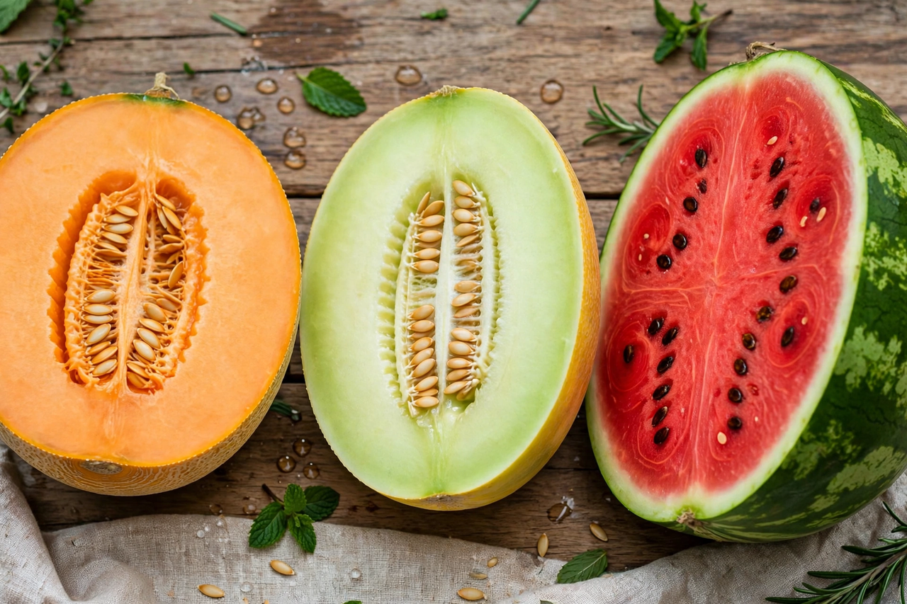

Melon

Family: Cucurbitaceae
Principal species: Cucumis melo; watermelon Citrullus lanatus
A melon is any of various plants of the gourd family Cucurbitaceae with sweet, edible, fleshy fruit. The word "melon" derives from Latin melopepo. In botanical terms the fruit is a berry (a pepo), and many melons belong to the species Cucumis melo, which encompasses an extraordinary diversity of forms — smooth, netted, ribbed, orange- or green-fleshed — while watermelons belong to a separate genus, Citrullus.
Types
Major groups of Cucumis melo include the netted cantaloupes and muskmelons, smooth winter melons such as honeydew and casaba, the intensely aromatic charentais of France, and Asian pickling and oriental melons. Other fruits called melons include the horned melon (kiwano) and the bitter melon, which is cooked as a vegetable. Wild melons originated in Africa and Asia, and melons were among the earliest domesticated plants in both hemispheres.
Cultivation and use
Melons need warm, sunny growing conditions with ample water and are harvested ripe for dessert types since many do not ripen well off the vine. China is by far the largest producer. Melons are eaten fresh, in fruit salads and with cured ham, juiced, and in Japan premium gift melons such as Yubari King are sold as luxury goods at very high prices. Melon flesh is mostly water with useful amounts of vitamin C and vitamin A precursors; the seeds of some types are also eaten.